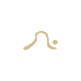

Full Moon
Full Moon Class
12 spots. 6:30pm as the sun drops, the terrace open to the sky. "When the tide pulls, so do we." Announce 10 days out. Post "4 spots left" three days before. Sold out the day of.
Within 3 months this becomes the most talked-about session she runs. The waitlist is the ad.
Monthly · 12 spots only

New Moon
Intention Setting Class
The quieter companion. Yin yoga + journaling. 8 spots max. "What are you calling in this month?" Held indoors, candlelit if possible. Slower, deeper, more intimate.
Different crowd — more introspective, more likely to become long-term regulars.
Monthly · 8 spots
Why these two work together
Full moon draws new people — it's exciting, shareable, social. New moon retains your regulars — it feels exclusive and meaningful. Together they give her a rhythm the community starts to build their month around. Neither requires new content. Just consistency.